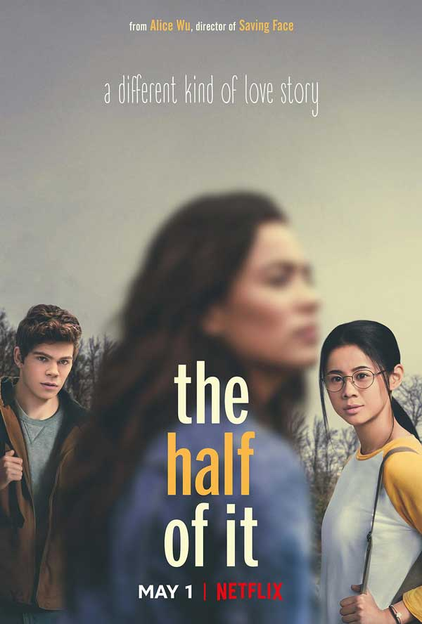

The Half Of It
剧情简述
艾莉是一个家庭拮据的华裔女孩儿，凭着出色的学习能力给同班同学代写论文赚些日常开销。这天，同班同学保罗请求艾莉帮自己写一份特殊的论文--情书。原来保罗爱上了校花艾斯特，却因笨嘴拙舌不敢当面去追求。艾莉认为代写情书是件不道德的事情就拒绝了保罗，没多久却因为家里的电费账单不得不答应了保罗。在你来我往的一封封信件中，艾莉发现校花艾斯特的生活其实并不如意，但是内心仍然十分的善良，心里居然对她产生了一些微妙的情愫。而保罗在和艾莉合作的这段日子里，渐渐将好感转移到了眼前这个勤奋善良的东方女孩儿身上。
个人观感
在青少年特有的自我人格重塑期，每个人都在探索着自己的本我和热爱。爱情只是成长中的辅助剂，而并不是全部。本片的主旨也在用一种轻柔的姿态探讨一些厚重的话题。比如什么是爱？什么是自我？而同性恋又意味着什么？我们没有看到下坠的绝望，撕裂的哀伤，通篇都是春风轻抚着面庞的温柔。清新的画面、轻松的BGM、合适的选角还有通篇贯穿的文艺“金句”。我们跟随着影片中的每位主角在文艺却不晦涩、迷茫却不堕落、复杂却不混杂的情绪状态中放松着心情以上帝视角和旁观者的姿态细细的品味着每个人的生活。
此处附上电影的磁力链接：The Half Of It
，磁力链接的使用需安装 迅雷 。使用手机钉钉打开此页面会出现视频无法加载等一系列的情况🙂，为保证您的浏览体验，请使用PC版钉钉或谷歌浏览器打开。
d=====(￣▽￣*)b
d=====(￣▽￣*)b